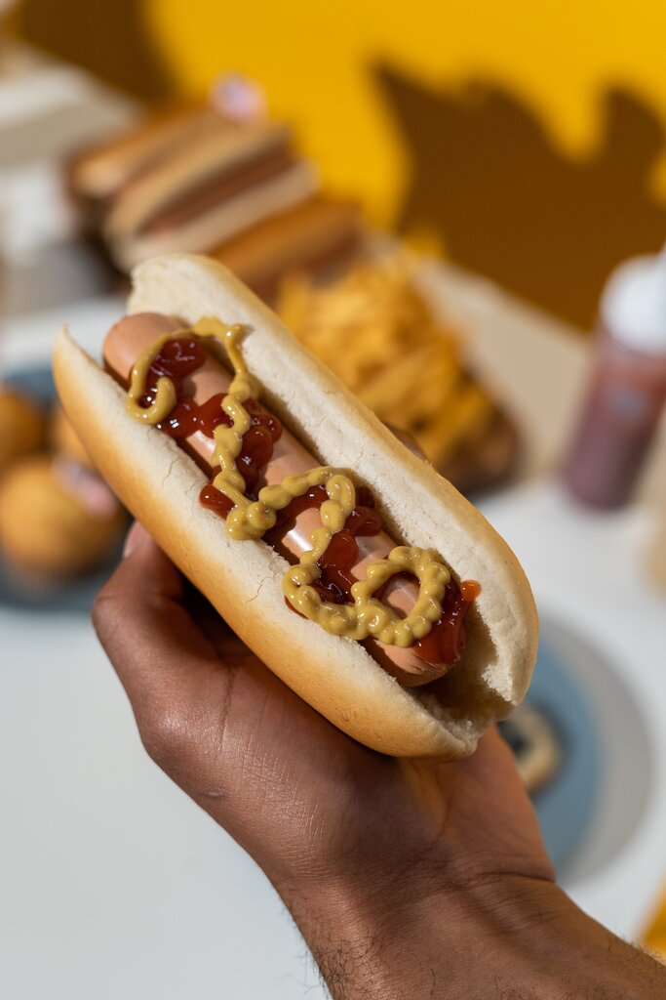

Fast food, znany również jako "szybkie jedzenie," to kategoria kulinarna, która uosabia wygodę i dostępność w dzisiejszym szybkim tempie życia. To żywność serwowana błyskawicznie i często oferowana w przystępnych cenach. Restauracje i bary fast food są obecne na całym świecie, oferując szeroki wybór dań, które można zamówić i zjeść w ciągu kilku chwil. Ta forma gastronomii czerpie z różnych kuchni i kultur, co sprawia, że można znaleźć coś dla każdego, od burgerów po makarony i dania z frytkami. Szybkie jedzenie zmieniło nasze nawyki żywieniowe i stało się nieodłączną częścią naszej kultury kulinarnej. Choć jest często krytykowane za nadmiar kalorii i tłuszczu, to jednocześnie cieszy się ogromną popularnością. Wraz z rosnącym zapotrzebowaniem na wygodne posiłki, fast food nadal ewoluuje, wprowadzając zdrowsze opcje i innowacyjne smaki, aby sprostać oczekiwaniom współczesnych konsumentów.
Hot dog, często określany jako "kiełbasa w bułce," to jedno z najbardziej rozpoznawalnych i uwielbianych dań fast food. Jego historia sięga Niemiec, ale to w Stanach Zjednoczonych stał się symbolem kultury fast food. Hot dog to grillowana kiełbasa umieszczona w długiej bułce, z różnymi dodatkami, takimi jak ketchup, musztarda, cebula i ogórki konserwowe. Istnieje wiele teorii na temat pochodzenia hot doga, ale bez względu na to, jakie jest jego dokładne pochodzenie, jest to danie, które zdobyło serca wielu ludzi na całym świecie. Hot dogi są popularne na imprezach sportowych, festiwalach i jako przekąska na ulicy. To symbolem prostoty, smaku i wygody, która przyciąga zarówno mieszkańców miast, jak i turystów w poszukiwaniu kawałka kultury amerykańskiej.
Burger, znany także jako hamburger, jest niezwykle rozpoznawalnym i popularnym daniem fast food. To kompozycja mielonej wołowiny lub innego mięsa, umieszczonej w bułce. Jego historia sięga Niemiec w XIX wieku, ale to w Stanach Zjednoczonych stał się ikoną kultury fast food. Pierwsze sieciowe restauracje serwujące burgery powstały w XX wieku, co przyczyniło się do jego powszechności. Burger to danie, które można dostosować do własnych upodobań, z różnymi rodzajami mięsa, dodatkami i sosami. To symbol prostoty, smaku i dostępności. Restauracje fast food na całym świecie serwują burgery jako popularną pozycję na swoim menu. Burger stał się synonimem szybkiego i przyjemnego jedzenia, które satysfakcjonuje kubki smakowe i daje poczucie wygody.
Pizza, pochodząca z Włoch, to klasyczne danie, które zdobyło ogromną popularność na całym świecie i stało się ikoną fast food. Tradycyjna pizza to cienkie ciasto pokryte sosem pomidorowym i serem, choć istnieje wiele odmian z różnymi dodatkami, takimi jak pieczarki, szynka, czy owoce morza.Pizza weszła na rynek amerykański dzięki włoskim imigrantom na przełomie XIX i XX wieku, a lata 50. i 60. przyniosły jej rosnącą popularność jako dania fast food. Współcześnie, sieciowe pizzerie jak Domino's i Pizza Hut przyczyniły się do rozpowszechnienia pizzy jako jedzenia, które można zamówić i dostarczyć pod drzwi. To danie, które łączy smak z wygodą i jest uwielbiane na całym świecie.
Kebab to danie pochodzące z kuchni Bliskiego Wschodu, które stało się ulubionym fast foodem na całym świecie. Składa się z kawałków mięsa, często drobiu lub wołowiny, które są grillowane na pionowym rożnie i podawane w bułce lub na talerzu z warzywami i sosem. To danie, które łączy smak śródziemnomorskich przypraw z prostotą i wygodą jedzenia na wynos. Historia kebaba sięga starożytności, ale to w XX wieku zdobył popularność poza swoimi pierwotnymi terenami. Imigranci z Bliskiego Wschodu przyczynili się do rozpowszechnienia kebaba jako dania szybkiego jedzenia. Dziś można znaleźć kebaby na ulicach wielu miast na całym świecie, oferując smak Orientu w przystępnej formie. To danie, które cieszy się popularnością zarówno wśród miłośników kuchni mięsnej, jak i wegetariańskiej, ze względu na różnorodność opcji i smaków.